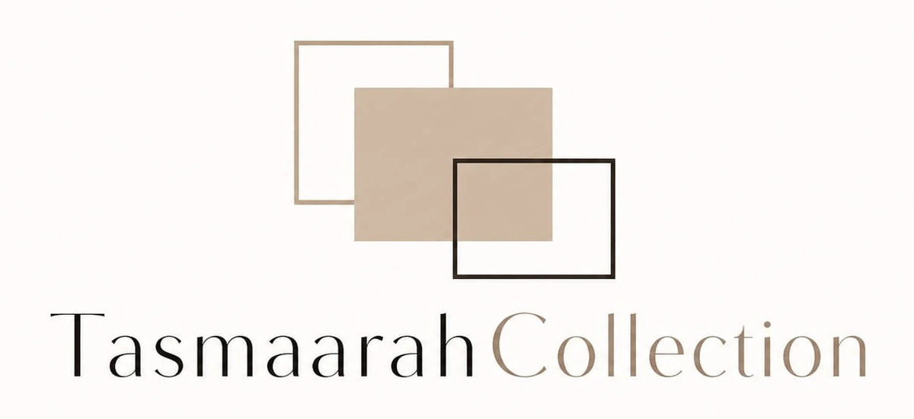

Skip to content
Reservoir Hills, Durban
Courier services available
063 540 9729
Pause motion
Home
About Us
Collection
Occasions
Custom Orders
Gallery
Contact

Home
About
Collection
Occasions
Custom
Gallery
Contact
Get a quote
404
That page isn’t here.
The link may have moved. Return home or continue browsing the Tasmaarah Collection.
Back to home
WhatsApp